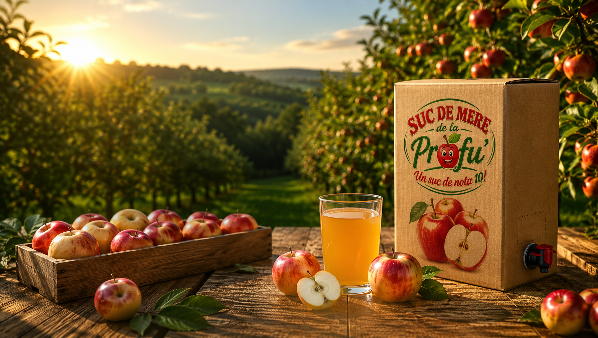
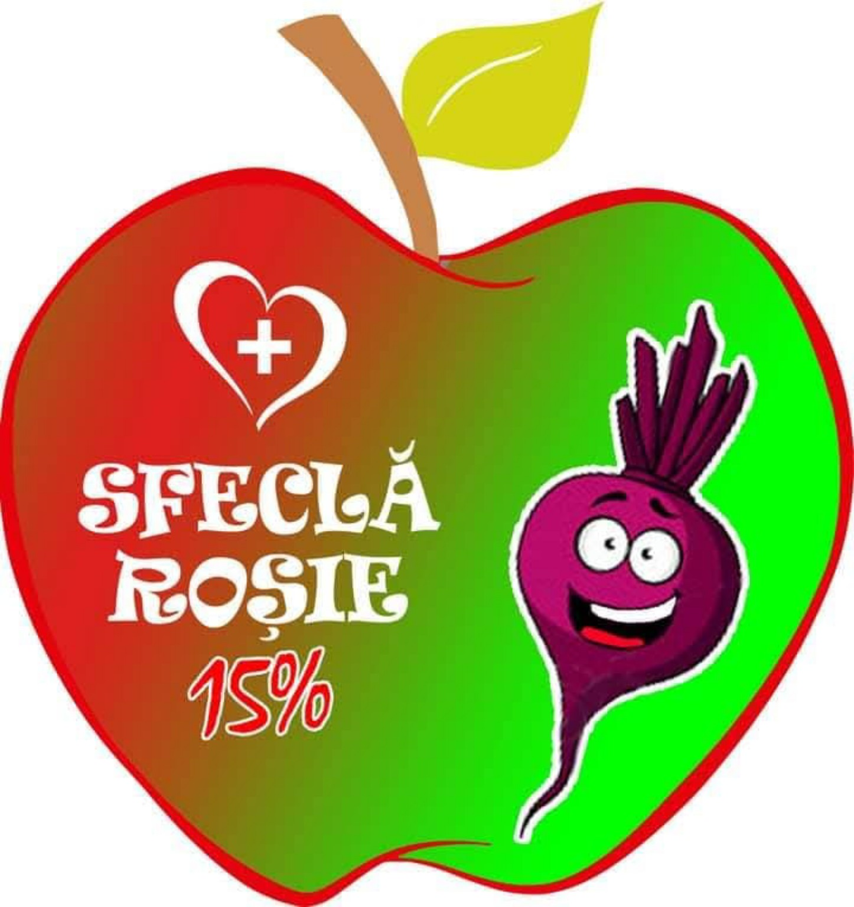
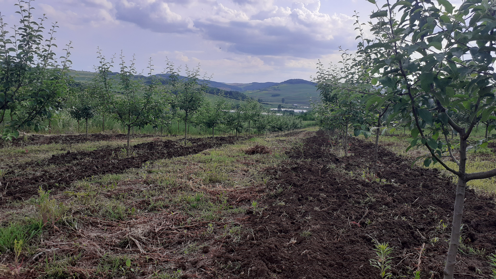
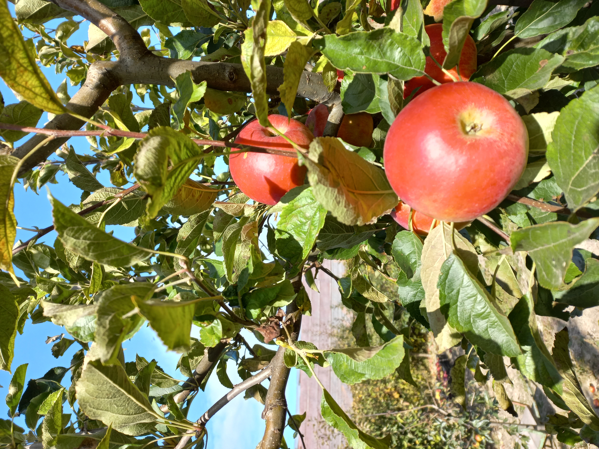
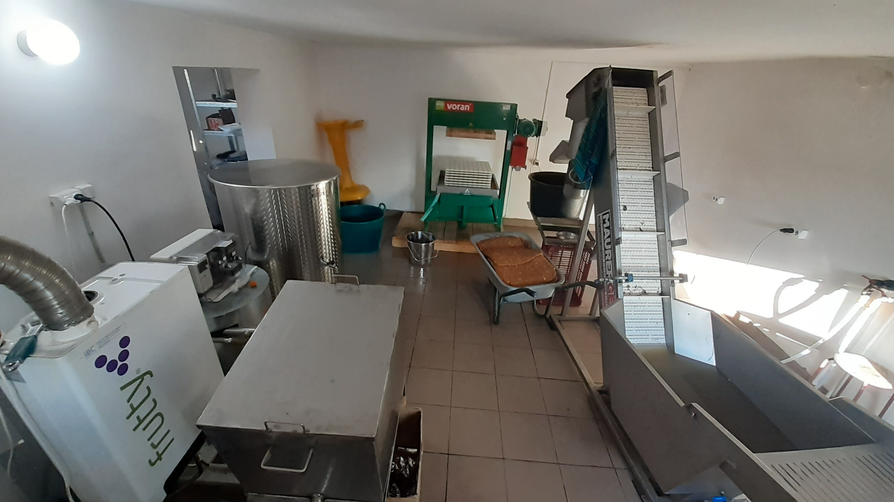
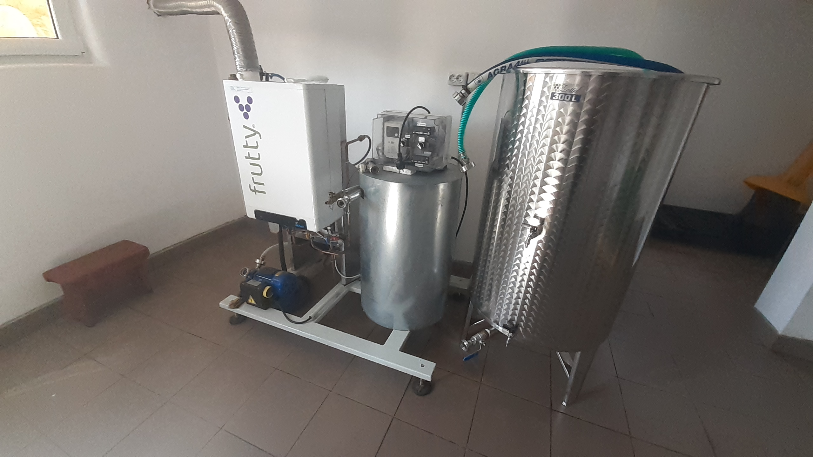
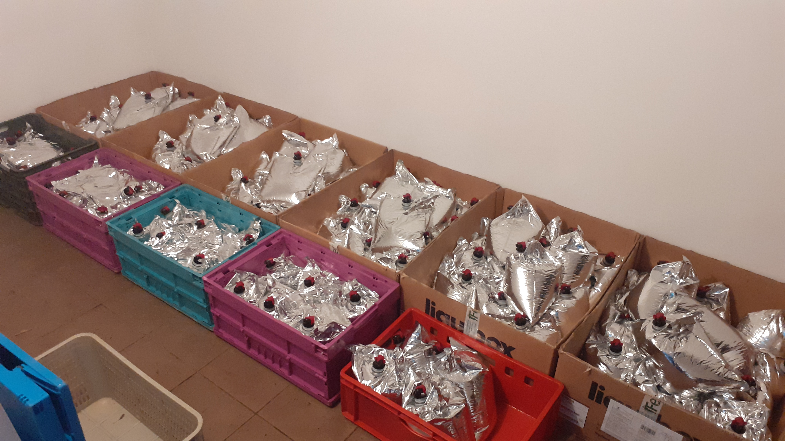
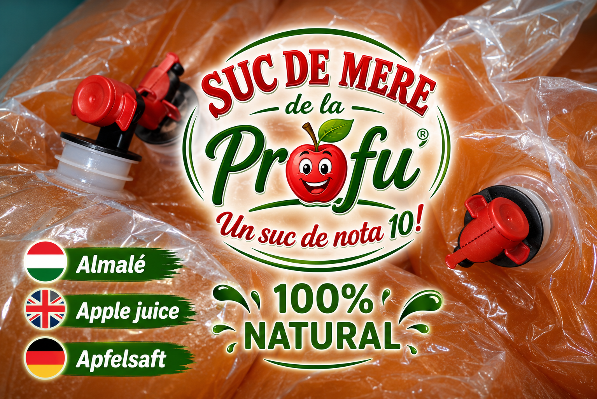
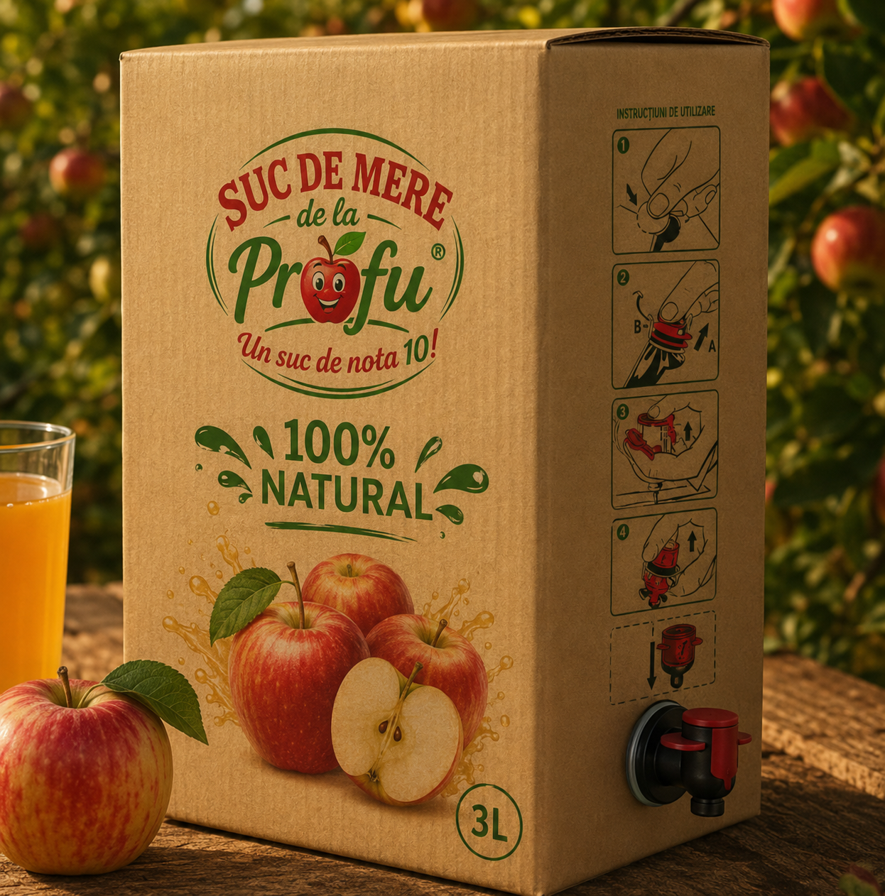
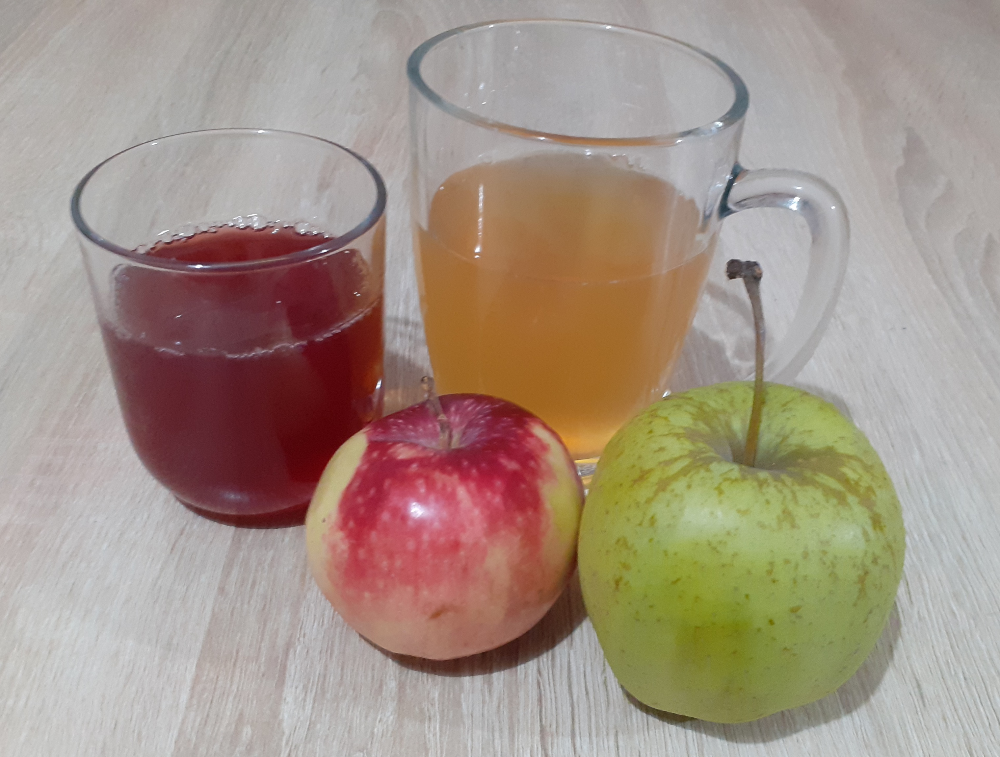

Suc de mere obținut din mere atent selecționate, fără zahăr adăugat și fără conservanți. Ambalat în sistem Bag-in-Box de 5 litri pentru prospețime de lungă durată.

Fără zahăr adăugat
Fără conservanți
Bag-in-Box 5L
Suc natural obținut din mere atent selecționate, fără zahăr adăugat și fără conservanți.
40 RON / 5L
✔ În stoc

Combinația perfectă dintre mere și sfeclă roșie (85%+15%), cu un gust echilibrat și natural. Vitamine într-un pahar.
45 RON / 5L
✔ În stoc
✖ Indisponibil
Vă rugăm selectați produsele mai sus și completați datele comenzii.
Doar mere atent selecționate.
Conține doar zaharurile naturale din fructe.
Păstrează sucul proaspăt mai mult timp.
Produs cu grijă în Lopadea Nouă și Aiud.
Folosim mere sănătoase și bine coapte pentru un gust autentic.
Merele sunt presate pentru a păstra aroma și proprietățile naturale.
Sucul este pasteurizat delicat, fără conservanți.
Ambalajul de 5 litri păstrează sucul proaspăt după deschidere.
Imagini din livadă și din procesul de obținere a sucului.








517395, LOPADEA NOUĂ, NR: 215, JUDEȚUL: ALBA
Aici producem sucul nostru natural din mere și sfeclă. Pentru prestări servicii faceți programare și ne vedem aici.
515200, AIUD, STR: TUDOR VLADIMIRESCU, NR: 82, JUDEȚUL: ALBA
Livrarea sau ridicarea comenzilor se face de la această adresă după confirmarea telefonică sau prin WhatsApp.
Îți mulțumim pentru comandă! Se va deschide conversația WhatsApp pentru confirmare.